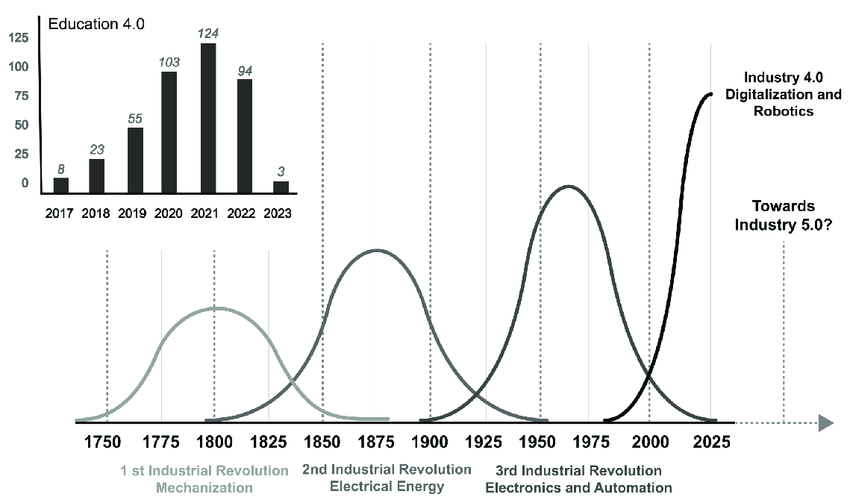

Balance to Crisis
Climate vs Socioeconomics
Once upon a time, Earth was a perfect sanctuary. Its atmosphere was clean, its waters pure, and its ecosystems in harmony, creating the ideal conditions for life to thrive.
Then,
humanity’s ingenuity sparked a new era. We discovered tools, built communities, and over centuries, transformed the landscape with agriculture and industry. Our cities grew, technology advanced, and global connections deepened. Industrialization and globalization brought progress—life expectancy soared, economies flourished, and societies evolved in ways never thought possible.
Yet, as we thrived, the natural world bore the weight of our success.
Climate
Data doesn't lie. In just a few short centuries, the planet’s average temperature has risen at an alarming rate, with record-breaking heat waves, devastating storms, and shrinking polar ice sheets becoming common headlines. Carbon dioxide levels are the highest they’ve been in over 800,000 years. The oceans, which have absorbed much of this excess heat, are acidifying, placing marine life in peril. Forests, once the lungs of the planet, are disappearing—cleared to make way for industries and growing populations.
 Yet, in our pursuit of economic and social progress, we often overlooked the environmental costs. While globalization and industrialization brought unparalleled economic growth and improved living standards for millions, it came at a price. We have been relentlessly extracting from Earth without giving back, pushing the planet closer to a point of no return.But it’s not too late.
This story isn’t over yet.
What can we do?
We are the first generation to truly understand the scale of our impact—and perhaps the last with the power to fix it. Now is the time to act. To rethink our choices, adopt sustainable practices, and commit to restoring the planet’s balance. We’ve harnessed technology to build great societies; now we must use it to heal our world. Every step we take today, no matter how small, is a step towards a future where both humanity and nature can thrive together. The road ahead is challenging, but we have the tools, the knowledge, and most importantly—the will to make a difference. Together, we can rewrite the next chapter of Earth’s story. A story where the planet heals, and humanity lives in harmony with the natural world once again.